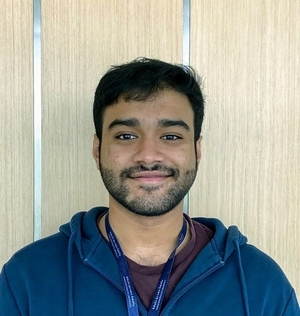

Hi, I’m Fadhil.
I’m a Computer Science MMath student at the University of Waterloo, advised by Prof. Khuzaima Daudjee.
Prior to that, I used to be a Software Engineer at QCRI.
There, I worked on some cool projects, one of which got turned into a start-up. I was also part of a biology lab, where I built tools and pipelines for RNA-Seq.